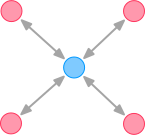
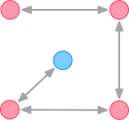

This week we are going to construct an application that consists of several components, some running on the Raspberry Pi, others running on a server that we don’t even have control over. In particular, we are going to build an alarm application, which consists of a movement sensor, a webcam, and the Sense HAT to display an alarm. In addition, we want the alarm system to send a message via Slack, and also upload a picture to it. For that, we need to use the Slack API, so that we can integrate it into our application.
Learning Goals
After this week, you will be able to:
Read the documentation of an API and understand elements of it.
Understand some of the mechanisms of APIs.
Create simple applications from APIs.
Understand some of the principles of REST API.
APIs
Most software systems are not constructed completely new every time. Instead, they consist of a set of reusable elements, also called components. And even if a system is constructed completely from scratch (without any reused code), it is much easier to construct it if it is made up of individual components.
Components can be many things. One examples are Python modules, as you have already used them. A Python module can encapsulate some functionality that your program can use. We used for instance a Python module that created a HTTP server, and another one to create an MQTT client. Components can also be offered by the operating system, for instance to read files or connect to the USB ports. Yet another example are distributed components, running on a different machine. You can for instance use Amazon’s cloud storage to store files of your application in a large data center.
So, systems are made from components. But how can we ensure that they work together properly? This is where we use application programming interfaces (APIs).
An API is a description and sometimes some additional code to ensure that we use a software component correctly. Depending on how the component is implemented an offers its API, i.e., in which language, which underlying protocol and in which context, the description of APIs vary a lot. The API describes how to invoke a function, what kind of parameters to provide, and what to expect as a result. In Python, an API is given as a set of functions, but there are many other possibilities how an API can be built. A distributed API can be built from a set of requests (HTTP requests, for instance), or remote functions. Some programming languages or libraries offer support for remote procedure calls. This is a technique for calling a method or function on another computer as if the method was local, on the same computer.
Some APIs have only very few functions, while others may have thousands, depending on the complexity of the component to connect to. The following can be a complete API, for a very simple component that periodically sends a temperature update:
TEMPERATURE API:
MQTT Broker: mqtt.example.com:1883
Subscribe to topic api/weather/temperature/json
Result will be messages in JSON, with format {"temp": 21}
Examples for Web-based APIs
There are many APIs available on the internet. Here are just three examples:
Slack This API is available at https://api.slack.com and allows to integrate applications with the Slack messaging service. Applications can send messages to users, or have chat-based dialogs with them.
AtB Sanntid Provides an API at https://www.atb.no/sanntid/ that shows the current position of busses and expected arrivals at buss stops.
Meteorologisk institutt provides a service with weather data and forecasts https://api.met.no.
Task: Browse through some of the links from the APIs above, and have a look what they offer you to do, and how they describe what you should do.
APIs Provide Abstraction
APIs try to hide as much complexity of a problem as possible. With the example of our very simple temperature API, we can use the API without knowing how the details are implemented, for instance how the component measures the temperature, or how it processes our request. To use it properly, we are just interested in the behavior of the component as a “black box.” It is not always obvious which behavior we should hide or not — maybe we are very much interested how the temperature was measured, but that depends on the entire system.
Abstraction also allows that a component changes over time how it provides an API. It can for instance change details of the implementation without that the user of the API needs to adapt anything. (We come back to that later.)
APIs Are Written With Use Cases in Mind
For an API to be useful, it should provide access to use cases that are relevant for the programs that use it. This means how the individual functions one can call are structured. For a math API, it seems to be a good idea to have a method add(a, b) to add two numbers. A method add_two_(a) which always adds the value two to a number is also possible, but you may wonder if it is useful for an API. That depends of course on the problem we build the API for. If the problem we want to support needs to add the number two a lot, then we could think of offering that as a dedicated method of the API. (It’ s a bit like organizing your stuff at home. Should you have an extra drawer for winter jackets? Or put all jackets together?). Therefore it requires some experience and some attempts to write a “good” API.
APIs Evolve Over Time
We have said above that APIs evolve over time, and because of their way of hiding features this can often happen without the other programs noticing. However, that is not always the case. Sometimes the API itself has to change more drastically, so that we can offer new functionality. This is why APIs often have version numbers and evolve just like other software. Sometimes updating to a new version of an API is simple, while it sometimes may require a lot of changes.
Ingredients for an API
What do we need when we want to build an API? Let’s have a look at a list of items we should think of before making an API:
A description of the use cases: We should know which purposes our API should serve. What do the users of our API want to do? Which kind of data do they have? What kind of result do they expect?
A library or framework or technology to offer the API. We need to understand how we want to offer our API. Is it a library that runs locally on a computer, for instance as Python module? Or is it a distributed API that we want to offer on a server?
A language for the API. How do we want to describe the API? When we use Python, we show the signatures of the functions, together with some documentation code. When it is a distributed API, we need some other technology. There also exist frameworks that generate nice web pages as documentation, for instance by parsing programming code and its documentation.
Examples. To get the use cases right, we often need a lot of examples for possible uses so we don’t forget anything. Once a programmer is familiar with the technology behind an API, these examples can be the hardest thing to get, and understanding of them may evolve over time, which is why there can come a new version of an API.
The Slack API
Slack is a messaging application that allows to integrate other platforms to integrate via APIs. It is simple, for instance, to add so-called bots to the service, which can add all kind of functions. For instance, I often run some code on a server for experiments. With only a few lines of code I can make this code to send a message via Slack so that I am notified once the job is done. In the lab for this unit we are going to build an alarm system with Slack.
Slack does not only use a single API, but several ones:
The Web API offers access to channels and messages via HTTP resources. It works similar to our lab with HTTP. Client applications use HTTP requests, and Slack runs an HTTP server that accepts these requests. The content of the request is given as JSON, and can for instance send a message to a given channel. As usual in HTTP in this direction, all requests must originate from the client. Therefore, you cannot receive messages via this API, for example.
The Events API also uses HTTP and JSON, but in this API Slack is the client, and our application implements an HTTP server. For example, when a user sends a message on Slack, the Slack HTTP client makes a request to the HTTP server that our application runs and that we registered with Slack.
The Real-Time Messaging API uses Websockets as underlying technology. We haven’t treated Websockets in the course, but this is some bi-directional alternative to HTTP, so that also the server can send messages to the client. Slack offers this API, but with some limitations.
This may be confusing at first, but when you know about the underlying technologies, it makes more sense. In the lab, we are only going to use the Web API, but this selection shows you how many possibilities there are for APIs. And there are much more!
Wrapper Libraries
Assume that a service (such as Slack) offers an API via HTTP. You can use this API in some “raw” form, and creating the right HTTP requests in several ways:
You can use the command line program curl to create such requests.
You can use a browser, with some hacking, to make a corresponding request. (Not convenient, but often possible.)
More likely, you can program the request manually in Python, for instance using the requests library, as we did in the HTTP lab.
All of these methods are a bit cumbersome, aren’t they? Therefore, there is another option:
Someone may create an extra library in Python that encapsulates all the HTTP requests in Python with some code. The result can be an API in Python that uses internally HTTP to connect to a remote service like Slack.
The benefit of the client library (for instance in Python) is the convenience. The client library can offer additional functions so that the HTTP requests are encoded correctly, and data is handled consistently. For a programmer, it almost appears as if Slack was running locally on the computer, since all the HTTP requests are hidden within the library.
REST
Some APIs are called REST APIs, because they follow a certain architectural style that makes it easier (or possible at all) that the APIs are offered with some desirable properties. Such properties are for instance performance and scalability, which are important once an API has a lot of users at the same time. The idea is to use similar mechanisms to enable such properties that also make HTTP work. And, while REST is not constrained to HTTP, most APIs that adhere to the REST principles are implemented in HTTP. Therefore, it is also okay to think of REST as a set of rules how an API can be expressed using HTTP.
If you don’t understand all of these constraints completely, or why they are important, don’t worry too much for now. REST is an architectural style, which encapsulates a lot of experience. Some issues are not so simple to grasp even for developers that have worked for some years. Still—read through them. Many of these concepts and terms will come up often.
Client–server separationThe client and the server act independently, each on its own, and the interaction between them is only in the form of requests, initiated by the client only, and responses, which the server send to the client only as a reaction to a request. The server just sits there waiting for requests from the client to come. The server doesn’t start sending away information about the state of some resources on its own.
StatelessStateless means the server does not remember anything about the user who uses the API. It doesn’t remember if the user of the API already sent a GET request for the same resource in the past, it doesn’t remember which resources the user of the API requested before, and so on. Each individual request contains all the information the server needs to perform the request and return a response, regardless of other requests made by the same API user.
Layered systemBetween the client who requests a representation of a resource’s state, and the server who sends the response back, there might be a number of servers in the middle. These servers might provide a security layer, a caching layer, a load-balancing layer, or other functionality. Those layers should not affect the request or the response. The client is agnostic as to how many layers, if any, there are between the client and the actual server responding to the request.
CacheableThis means that the data the server sends contain information about whether or not the data is cacheable. If the data is cacheable, it might contain some sort of a version number. The version number is what makes caching possible: since the client knows which version of the data it already has (from a previous response), the client can avoid requesting the same data again and again. The client should also know if the current version of the data is expired, in which case the client will know it should send another request to the server to get the most updated data about the state of a resource.
In other words, this makes an API behave much like an HTTP server otherwise serving websites to many browsers.
Orchestration vs. Choreography
Once we have a set of APIs we need to control how the overall system is coordinated. For that, we distinguish two different patterns; orchestration and choreography.
Let’s start with an example from everyday life. Imagine you want to organize a visit to the cinema with some friends, and you need to agree on which movie to watch and when to meet and so on. There is two ways of how to organize it:
You can yourself act as the orchestrator of the whole preparation, and call everyone (or Snap or whatever you do) and check with each and everyone of your friends what their preferences are, then come up with a plan that works for most of them and finally invite everyone.
You could also rely more on a distributed way of doing it, like just telling one of your friends that you are interested in going to the cinema, and ask them to ask someone else, and so on. You rely more one some kind of choreography, that each of your friends contributes to the process and drives it forward until you have a stable agreement.
The orchestration solution is probably the most controllable from your point of view, since you keep overview of the entire process and you have control over who has answered and so on, but it also requires you to coordinate everything. On the other hand, the choreography solution may end up in an argument like “Okay I thought we agreed on this movie and now you want to watch Halloween anyway?” However, choreographies can work quite nicely if everyone behaves as expected, and it does not depend on you as an orchestrator in the middle.
The same kind of behavior is possible for systems that consist of several components.
Orchestration: A centralized program (the orchestrator) takes care of coordinating all requests to other components. The orchestrator keeps control of all the other components and controls when to call them, and processes their results.

Choreography: There is a global coordination of components, following a decentralized approach. This usually requires that you need to have control over more than one component.

When creating applications with several applications, you will have to decide which kind of coordination pattern you want to follow. Sometimes, orchestration or choreographies are necessary or beneficial, sometimes a combination of the two may be most suitable.